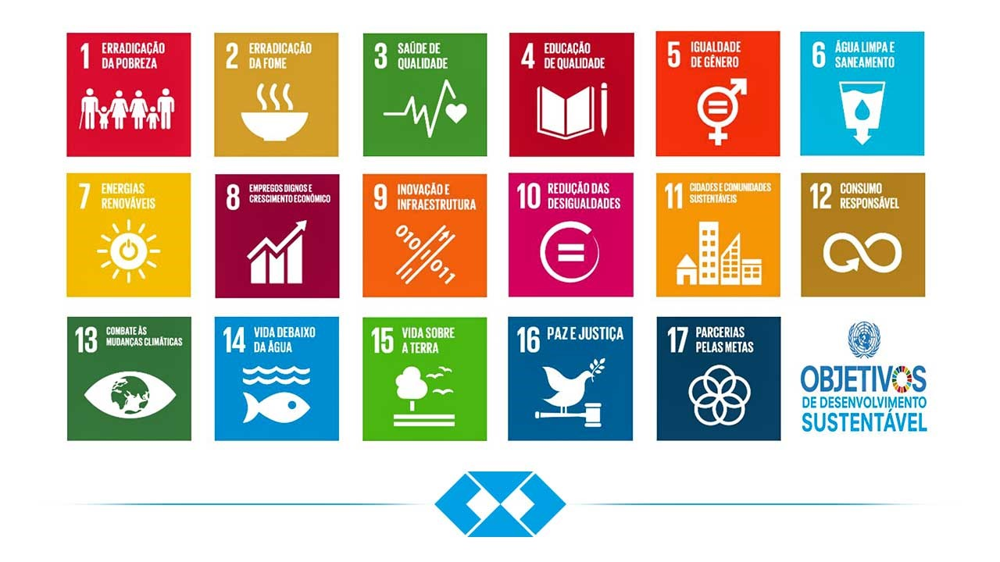

Um Pouco Mais Sobre a Educação Brasileira
A educação no Brasil era um privilégio exclusivo da alta sociedade, onde muitos eram lesados pela falta de educação. A falta de qualidade do ensino era também um grande problema para os que tinham acesso.
Entretanto, esse cenário tem mudado desde meados do século XIX quando foi criado as primeiras escolas de formação para professores.
Graças a Anísio Teixeira,a educação deixou de ser restrita à elite e se tornou acessiva ao restante da sociedade, por meio das escolas públicas.

Apesar da educação ter se tornado mais acessível atualmente, em vários lugares esse direito ainda é negado e de má qualidade.
De acordo com o IBGE, 27% dos brasileiros ainda são analfabetos e cerca de 4% dos estudantes do ensino médio são analfabetos funcionais.
ODS
Os Objetivos do Desenvolvimento Sustentável, são metas da ONU para promover bem-estar, acabar com a pobreza, proteger o meio ambiente e enfrentar as mudanças climáticas, etc.
Saiba mais sobre as ODS: Site das Nações Unidas

ODS 4: Educação De Qualidade
Até 2030, garantir que todas as meninas e meninos completem o ensino primário e secundário livre, equitativo e de qualidade, que conduza a resultados de aprendizagem relevantes e eficazes
Até 2030, garantir que todos as meninas e meninos tenham acesso a um desenvolvimento de qualidade na primeira infância, cuidados e educação pré-escolar, de modo que eles estejam prontos para o ensino primário
Até 2030, assegurar a igualdade de acesso para todos os homens e mulheres à educação técnica, profissional e superior de qualidade, a preços acessíveis, incluindo universidade
Até 2030, aumentar substancialmente o número de jovens e adultos que tenham habilidades relevantes, inclusive competências técnicas e profissionais, para emprego, trabalho decente e empreendedorismo
Até 2030, eliminar as disparidades de gênero na educação e garantir a igualdade de acesso a todos os níveis de educação e formação profissional para os mais vulneráveis, incluindo as pessoas com deficiência, povos indígenas e as crianças em situação de vulnerabilidade
Até 2030, garantir que todos os jovens e uma substancial proporção dos adultos, homens e mulheres estejam alfabetizados e tenham adquirido o conhecimento básico de matemática
Até 2030, garantir que todos os alunos adquiram conhecimentos e habilidades necessárias para promover o desenvolvimento sustentável, inclusive, entre outros, por meio da educação para o desenvolvimento sustentável e estilos de vida sustentáveis, direitos humanos, igualdade de gênero, promoção de uma cultura de paz e não violência, cidadania global e valorização da diversidade cultural e da contribuição da cultura para o desenvolvimento sustentável
Conte sua História
Nós, eu e pessoas que possam visitar, amaríamos saber de você aluno ou você professor como a educação mudou e continua mudando sua vida.
Queremos saber tudo, sua experiência, frustrações, conquistas, como é ser um estudante no Brasil, enfim tudo o que você quiser compartilhar
sobre os anos que você passou envolvido com a educação no nosso país.
Como mandar seu relato:
Entre em contato comigo no email: contesuahistoria67@gmail.com